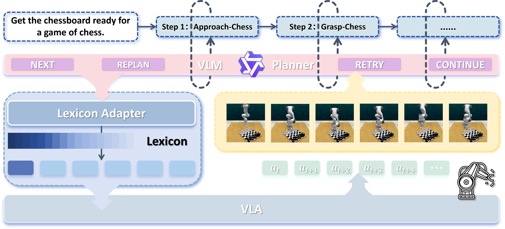
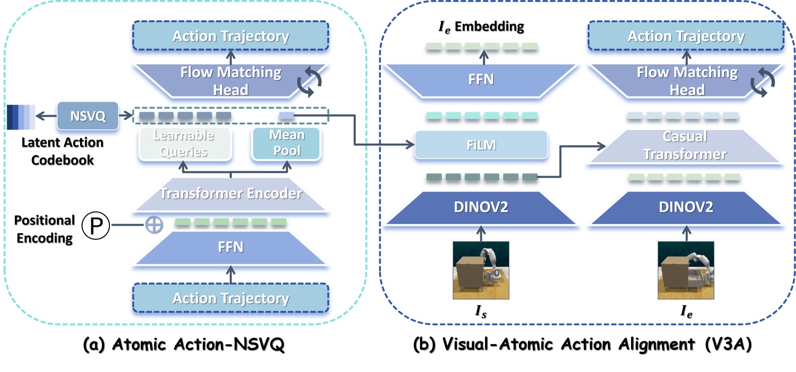
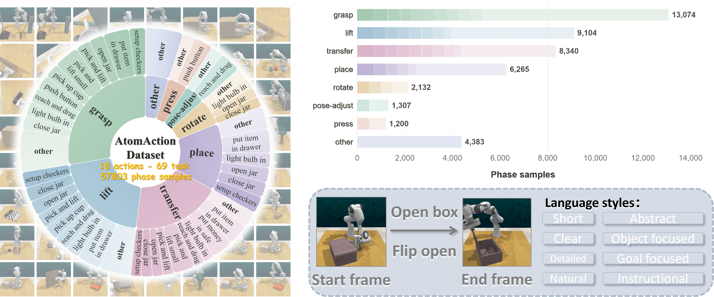
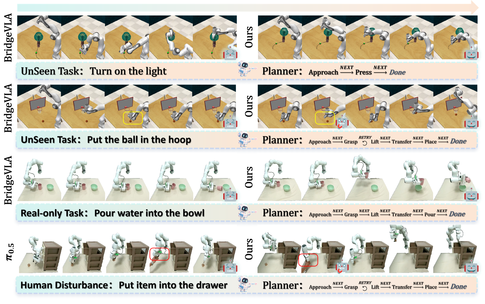

LexiconVLA: Learning Reusable Atomic Action Codebooks for Unseen Tasks
1 Sun Yat-sen University · 2 Pengcheng Laboratory · 3 X-Era AI Lab
An atomic-action lexicon that helps vision-language-action models retrieve and compose familiar interactions to solve unfamiliar manipulation tasks.
What if a robot could reuse what it knows?
Vision-language-action (VLA) models struggle to reuse recurring interactions in unseen tasks. Our diagnostic study reveals that reliable task completion does not imply consistent execution of constituent atomic actions across task contexts. We present LexiconVLA, a retrievable atomic-action lexicon for cross-task reuse.
Global and detail codebooks capture shared interaction structure and fine-grained execution variation, respectively, preserving both reusable patterns and execution details. Visual-Atomic Action Alignment couples trajectory reconstruction from visual state changes with visual outcome prediction from action codes, grounding the lexicon in motion and its effects. We learn these codebooks with trajectory reconstruction and visual alignment on our AtomAction Dataset of 57,803 segments from 69 tasks.
A planner and scene-aware adapter translate new goals into code-conditioned subtasks for a shared policy, without skill-specific experts or deployment-time parameter updates. Across five policy backbones on 26 RLBench tasks, LexiconVLA largely maintains performance on 18 seen tasks while improving success on 8 tasks held out from policy training. With BridgeVLA, unseen-task success rises from 16.67% to 34.17% (+17.50 percentage points), and overall success reaches 71.08%. Real-robot experiments demonstrate stepwise execution and failure recovery.
A shared vocabulary
for robot action.
LexiconVLA organizes recurring interaction phases into codes that a single policy can retrieve for new combinations of subtasks.
Decompose
A VLM planner turns a task instruction into atomic subtasks.
Condition
A scene-aware adapter selects global and detail codes for the active subtask.
Recover
A shared VLA acts, while feedback guides the next step, retry, or replan.

Grounded in motion and outcome.
The global codebook captures reusable interaction structure; detail codes retain execution variation. Visual-Atomic Action Alignment (V3A) links the learned codes to both motion and its visual effects.

Meet AtomAction.
Mechanism-level action segments extracted from RLBench demonstrations, each paired with trajectory, boundary observations, and language descriptions.

Built to transfer beyond the seen.
Across five VLA backbones and 26 RLBench tasks, the lexicon improves success on tasks held out from policy training.
+17.50 percentage points with LexiconVLA
Highest among methods with reported results in the paper
Real-robot evaluation: 62.0% average success across five tasks in the standard setting and 56.0% under unseen perturbations. Each setting evaluates 10 trials per task; see the paper for full protocols and per-task results.

Unseen conditions. Real actions.
Side-by-side rollouts of LexiconVLA, BridgeVLA, and π0.5. Each clip is a representative demonstration, not the full trial set.
Explore the full paper.
Methods, experiments, ablations, and evaluation details are available in the manuscript.